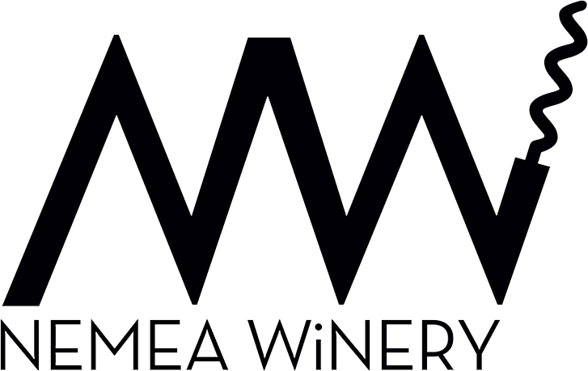

The logo was developed using the initials of the winery’s name, combining the first letters of each word to create the distinctive “NW” monogram. The design was carefully adapted to reflect the winery’s identity, with a corkscrew integrated into the mark as a subtle yet meaningful detail. The tagline was created to embody the spirit of wine culture and celebrate the enjoyment of life. Designing the labels presented a unique challenge, as the products were intended for different target audiences. This required variations in style, color palettes, and graphic elements while maintaining a cohesive brand identity across the entire range.